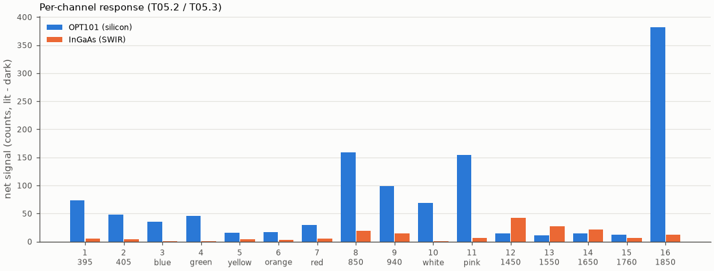
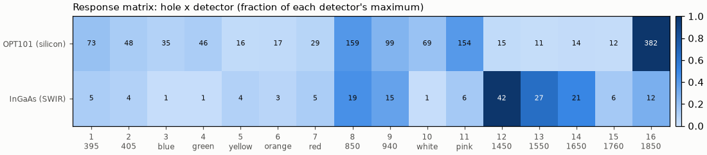
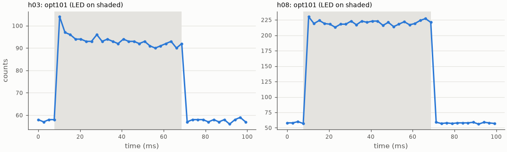
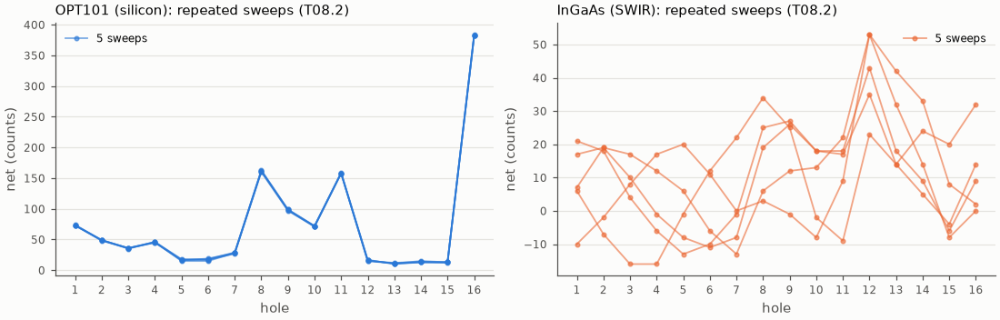

| Sample | black_cup | Operator | unknown |
|---|---|---|---|
| Firmware | 2.5.2 (proto 1, build 2026-11-17) | Config | 7b8098f06634 (thresholds provisional) |
| Host | macOS-27.0.1-x86_64-i386-64bit, Python 3.12.11 | Software | lio 0.2.0, git f05f1f2b10 (dirty) |
| Results | PASS 11, WARN 2, FAIL 2 | ||
| LED duty | 0.0 s of cool-down waits; 0 over-budget on-time(s) | ||
| Notes | retest after reseating LEDs 12/13/6 with putty | ||
| Test | Name | Status | Note |
|---|---|---|---|
| T05.1 | Rail gating by CE1 / CE2 | ✓ PASS | |
| T05.2 | Per-channel response | ! WARN | |
| T05.3 | Channel address and isolation | ! WARN | |
| T05.4 | Off-state return after each MEAS | ✓ PASS | |
| T05.5 | Repeatability (interleaved MEAS) | ✓ PASS | not judged (net < 1000 counts or detector unusable): 1/opt101, 2/opt101, 3/opt101, 4/opt101, 5/opt101, 6/opt101, 7/opt101, 8/opt101, 8/ingaas, 9/opt101, 9/ingaas, 10/opt101, 11/opt101, 12/ingaas, 13/ingaas, 14/ingaas, 15/ingaas |
| T06.1 | OPT101 | ✓ PASS | |
| T06.2 | InGaAs TIA | ✓ PASS | |
| T06.3 | Cross-calibration on the shared holes | ✕ FAIL | |
| T07.1 | Step response and settling time | ✕ FAIL | |
| T07.2 | Recommended settle time | ✓ PASS | |
| T07.3 | MEAS timing | ✓ PASS | |
| T08.1 | SWEEP completes with a valid schema | ✓ PASS | |
| T08.2 | Repeated sweeps | ✓ PASS | |
| T08.3 | Sweep agrees with MEAS | ✓ PASS | |
| T08.4 | CSV output format | ✓ PASS |




| Check | Status | Result | Criterion |
|---|---|---|---|
Hole 8 selected, CE1 lowT05.1/A/h08/ce_low |
✓ PASS | opt101 57 (dark 57) | dark |
Hole 8 selected, CE1 highT05.1/A/h08/ce_high |
✓ PASS | opt101 210 | light above the detection threshold |
Hole 8 with CE2 (wrong rail)T05.1/A/h08/wrong_ce |
✓ PASS | ERR code=3 needs exactly one selected hole on this rail | refused (code 3) |
Hole 12 selected, CE2 lowT05.1/B/h12/ce_low |
✓ PASS | ingaas -169 (dark -169) | dark |
Hole 12 selected, CE2 highT05.1/B/h12/ce_high |
✓ PASS | ingaas -128 | light above the detection threshold |
Hole 12 with CE1 (wrong rail)T05.1/B/h12/wrong_ce |
✓ PASS | ERR code=3 needs exactly one selected hole on this rail | refused (code 3) |
| Check | Status | Result | Criterion |
|---|---|---|---|
Hole 8 (850) on ingaasT05.2/h08/ingaas |
! WARN | net +19 (weak); weaker than expected | expect signal: signal >= 38 |
Hole 9 (940) on ingaasT05.2/h09/ingaas |
! WARN | net +15 (weak); weaker than expected | expect signal: signal >= 38 |
Hole 13 (1550) on ingaasT05.2/h13/ingaas |
! WARN | net +27 (weak); weaker than expected | expect signal: signal >= 38 |
Hole 14 (1650) on ingaasT05.2/h14/ingaas |
! WARN | net +21 (weak); weaker than expected | expect signal: signal >= 38 |
Hole 15 (1760) on ingaasT05.2/h15/ingaas |
! WARN | net +6 (none); weak channel below the weak threshold | expect weak: signal >= 38 |
Hole 1 (395) on opt101T05.2/h01/opt101 |
✓ PASS | net +73 (signal); signal as expected | expect signal: signal >= 15 |
Hole 2 (405) on opt101T05.2/h02/opt101 |
✓ PASS | net +48 (signal); signal as expected | expect signal: signal >= 15 |
Hole 3 (blue) on opt101T05.2/h03/opt101 |
✓ PASS | net +35 (signal); signal as expected | expect signal: signal >= 15 |
Hole 4 (green) on opt101T05.2/h04/opt101 |
✓ PASS | net +46 (signal); signal as expected | expect signal: signal >= 15 |
Hole 5 (yellow) on opt101T05.2/h05/opt101 |
✓ PASS | net +16 (signal); signal as expected | expect signal: signal >= 15 |
Hole 6 (orange) on opt101T05.2/h06/opt101 |
✓ PASS | net +17 (signal); signal as expected | expect signal: signal >= 15 |
Hole 7 (red) on opt101T05.2/h07/opt101 |
✓ PASS | net +29 (signal); signal as expected | expect signal: signal >= 15 |
Hole 8 (850) on opt101T05.2/h08/opt101 |
✓ PASS | net +159 (signal); signal as expected | expect signal: signal >= 15 |
Hole 9 (940) on opt101T05.2/h09/opt101 |
✓ PASS | net +99 (signal); signal as expected | expect signal: signal >= 15 |
Hole 10 (white) on opt101T05.2/h10/opt101 |
✓ PASS | net +69 (signal); signal as expected | expect signal: signal >= 15 |
Hole 11 (pink) on opt101T05.2/h11/opt101 |
✓ PASS | net +154 (signal); signal as expected | expect signal: signal >= 15 |
Hole 12 (1450) on ingaasT05.2/h12/ingaas |
✓ PASS | net +42 (signal); signal as expected | expect signal: signal >= 38 |
Hole 1 (395) on ingaasT05.2/h01/ingaas |
- SKIP | not judged: 395 is outside the ingaas range (judged by opt101); recorded net +5 | out-of-range readings are not judged (channel.judge_out_of_range: false) |
Hole 2 (405) on ingaasT05.2/h02/ingaas |
- SKIP | not judged: 405 is outside the ingaas range (judged by opt101); recorded net +4 | out-of-range readings are not judged (channel.judge_out_of_range: false) |
Hole 3 (blue) on ingaasT05.2/h03/ingaas |
- SKIP | not judged: blue is outside the ingaas range (judged by opt101); recorded net +1 | out-of-range readings are not judged (channel.judge_out_of_range: false) |
Hole 4 (green) on ingaasT05.2/h04/ingaas |
- SKIP | not judged: green is outside the ingaas range (judged by opt101); recorded net +1 | out-of-range readings are not judged (channel.judge_out_of_range: false) |
Hole 5 (yellow) on ingaasT05.2/h05/ingaas |
- SKIP | not judged: yellow is outside the ingaas range (judged by opt101); recorded net +4 | out-of-range readings are not judged (channel.judge_out_of_range: false) |
Hole 6 (orange) on ingaasT05.2/h06/ingaas |
- SKIP | not judged: orange is outside the ingaas range (judged by opt101); recorded net +3 | out-of-range readings are not judged (channel.judge_out_of_range: false) |
Hole 7 (red) on ingaasT05.2/h07/ingaas |
- SKIP | not judged: red is outside the ingaas range (judged by opt101); recorded net +5 | out-of-range readings are not judged (channel.judge_out_of_range: false) |
Hole 10 (white) on ingaasT05.2/h10/ingaas |
- SKIP | not judged: white is outside the ingaas range (judged by opt101); recorded net +1 | out-of-range readings are not judged (channel.judge_out_of_range: false) |
Hole 11 (pink) on ingaasT05.2/h11/ingaas |
- SKIP | not judged: pink is outside the ingaas range (judged by opt101); recorded net +6 | out-of-range readings are not judged (channel.judge_out_of_range: false) |
Hole 12 (1450) on opt101T05.2/h12/opt101 |
- SKIP | not judged: 1450 is outside the opt101 range (judged by ingaas); recorded net +15 | out-of-range readings are not judged (channel.judge_out_of_range: false) |
Hole 13 (1550) on opt101T05.2/h13/opt101 |
- SKIP | not judged: 1550 is outside the opt101 range (judged by ingaas); recorded net +11 | out-of-range readings are not judged (channel.judge_out_of_range: false) |
Hole 14 (1650) on opt101T05.2/h14/opt101 |
- SKIP | not judged: 1650 is outside the opt101 range (judged by ingaas); recorded net +14 | out-of-range readings are not judged (channel.judge_out_of_range: false) |
Hole 15 (1760) on opt101T05.2/h15/opt101 |
- SKIP | not judged: 1760 is outside the opt101 range (judged by ingaas); recorded net +12 | out-of-range readings are not judged (channel.judge_out_of_range: false) |
Hole 16 (1850) on ingaasT05.2/h16/ingaas |
- SKIP | not judged: 1850 is outside the ingaas range (judged by no detector); recorded net +12 | out-of-range readings are not judged (channel.judge_out_of_range: false) |
Hole 16 (1850) on opt101T05.2/h16/opt101 |
- SKIP | not judged: 1850 is outside the opt101 range (judged by no detector); recorded net +382 | out-of-range readings are not judged (channel.judge_out_of_range: false) |
| Check | Status | Result | Criterion |
|---|---|---|---|
Hole 15 (1760) detector patternT05.3/h15/pattern |
! WARN | no response on ['ingaas']: possible swapped, misrouted or stuck-on channel | expected ['ingaas'] |
Hole 1 (395) detector patternT05.3/h01/pattern |
✓ PASS | seen by ['opt101'] as expected (ingaas not judged: outside its range) | expected ['opt101'] |
Hole 2 (405) detector patternT05.3/h02/pattern |
✓ PASS | seen by ['opt101'] as expected (ingaas not judged: outside its range) | expected ['opt101'] |
Hole 3 (blue) detector patternT05.3/h03/pattern |
✓ PASS | seen by ['opt101'] as expected (ingaas not judged: outside its range) | expected ['opt101'] |
Hole 4 (green) detector patternT05.3/h04/pattern |
✓ PASS | seen by ['opt101'] as expected (ingaas not judged: outside its range) | expected ['opt101'] |
Hole 5 (yellow) detector patternT05.3/h05/pattern |
✓ PASS | seen by ['opt101'] as expected (ingaas not judged: outside its range) | expected ['opt101'] |
Hole 6 (orange) detector patternT05.3/h06/pattern |
✓ PASS | seen by ['opt101'] as expected (ingaas not judged: outside its range) | expected ['opt101'] |
Hole 7 (red) detector patternT05.3/h07/pattern |
✓ PASS | seen by ['opt101'] as expected (ingaas not judged: outside its range) | expected ['opt101'] |
Hole 8 (850) detector patternT05.3/h08/pattern |
✓ PASS | seen by ['ingaas', 'opt101'] as expected | expected ['ingaas', 'opt101'] |
Hole 9 (940) detector patternT05.3/h09/pattern |
✓ PASS | seen by ['ingaas', 'opt101'] as expected | expected ['ingaas', 'opt101'] |
Hole 10 (white) detector patternT05.3/h10/pattern |
✓ PASS | seen by ['opt101'] as expected (ingaas not judged: outside its range) | expected ['opt101'] |
Hole 11 (pink) detector patternT05.3/h11/pattern |
✓ PASS | seen by ['opt101'] as expected (ingaas not judged: outside its range) | expected ['opt101'] |
Hole 12 (1450) detector patternT05.3/h12/pattern |
✓ PASS | seen by ['ingaas'] as expected (opt101 not judged: outside its range) | expected ['ingaas'] |
Hole 13 (1550) detector patternT05.3/h13/pattern |
✓ PASS | seen by ['ingaas'] as expected (opt101 not judged: outside its range) | expected ['ingaas'] |
Hole 14 (1650) detector patternT05.3/h14/pattern |
✓ PASS | seen by ['ingaas'] as expected (opt101 not judged: outside its range) | expected ['ingaas'] |
Hole 16 (1850) detector patternT05.3/h16/pattern |
✓ PASS | seen by nothing as expected (ingaas, opt101 not judged: outside its range) | expected none |
Signatures uniqueT05.3/unique |
✓ PASS | no two channels look the same | cosine < 0.98 or amplitude differs by more than 1 % |
| Check | Status | Result | Criterion |
|---|---|---|---|
Hole 1 ingaas back to darkT05.4/h01/ingaas |
✓ PASS | -168.8 after OFF vs dark -169 | within 5 sigma (18.8 counts) |
Hole 1 opt101 back to darkT05.4/h01/opt101 |
✓ PASS | 57.8 after OFF vs dark 58 | within 5 sigma (3.5 counts) |
Hole 2 ingaas back to darkT05.4/h02/ingaas |
✓ PASS | -168.0 after OFF vs dark -169 | within 5 sigma (18.8 counts) |
Hole 2 opt101 back to darkT05.4/h02/opt101 |
✓ PASS | 57.2 after OFF vs dark 58 | within 5 sigma (3.5 counts) |
Hole 3 ingaas back to darkT05.4/h03/ingaas |
✓ PASS | -168.0 after OFF vs dark -169 | within 5 sigma (18.8 counts) |
Hole 3 opt101 back to darkT05.4/h03/opt101 |
✓ PASS | 57.2 after OFF vs dark 57 | within 5 sigma (3.5 counts) |
Hole 4 ingaas back to darkT05.4/h04/ingaas |
✓ PASS | -168.0 after OFF vs dark -168 | within 5 sigma (18.8 counts) |
Hole 4 opt101 back to darkT05.4/h04/opt101 |
✓ PASS | 57.2 after OFF vs dark 57 | within 5 sigma (3.5 counts) |
Hole 5 ingaas back to darkT05.4/h05/ingaas |
✓ PASS | -169.2 after OFF vs dark -168 | within 5 sigma (18.8 counts) |
Hole 5 opt101 back to darkT05.4/h05/opt101 |
✓ PASS | 57.2 after OFF vs dark 58 | within 5 sigma (3.5 counts) |
Hole 6 ingaas back to darkT05.4/h06/ingaas |
✓ PASS | -169.0 after OFF vs dark -168 | within 5 sigma (18.8 counts) |
Hole 6 opt101 back to darkT05.4/h06/opt101 |
✓ PASS | 57.8 after OFF vs dark 58 | within 5 sigma (3.5 counts) |
Hole 7 ingaas back to darkT05.4/h07/ingaas |
✓ PASS | -168.8 after OFF vs dark -169 | within 5 sigma (18.8 counts) |
Hole 7 opt101 back to darkT05.4/h07/opt101 |
✓ PASS | 57.2 after OFF vs dark 57 | within 5 sigma (3.5 counts) |
Hole 8 ingaas back to darkT05.4/h08/ingaas |
✓ PASS | -168.5 after OFF vs dark -169 | within 5 sigma (18.8 counts) |
Hole 8 opt101 back to darkT05.4/h08/opt101 |
✓ PASS | 57.5 after OFF vs dark 58 | within 5 sigma (3.5 counts) |
Hole 9 ingaas back to darkT05.4/h09/ingaas |
✓ PASS | -168.5 after OFF vs dark -169 | within 5 sigma (18.8 counts) |
Hole 9 opt101 back to darkT05.4/h09/opt101 |
✓ PASS | 57.5 after OFF vs dark 57 | within 5 sigma (3.5 counts) |
Hole 10 ingaas back to darkT05.4/h10/ingaas |
✓ PASS | -168.5 after OFF vs dark -168 | within 5 sigma (18.8 counts) |
Hole 10 opt101 back to darkT05.4/h10/opt101 |
✓ PASS | 57.0 after OFF vs dark 58 | within 5 sigma (3.5 counts) |
Hole 11 ingaas back to darkT05.4/h11/ingaas |
✓ PASS | -169.0 after OFF vs dark -169 | within 5 sigma (18.8 counts) |
Hole 11 opt101 back to darkT05.4/h11/opt101 |
✓ PASS | 57.5 after OFF vs dark 57 | within 5 sigma (3.5 counts) |
Hole 12 ingaas back to darkT05.4/h12/ingaas |
✓ PASS | -167.5 after OFF vs dark -170 | within 5 sigma (18.8 counts) |
Hole 12 opt101 back to darkT05.4/h12/opt101 |
✓ PASS | 57.8 after OFF vs dark 58 | within 5 sigma (3.5 counts) |
Hole 13 ingaas back to darkT05.4/h13/ingaas |
✓ PASS | -168.8 after OFF vs dark -169 | within 5 sigma (18.8 counts) |
Hole 13 opt101 back to darkT05.4/h13/opt101 |
✓ PASS | 57.5 after OFF vs dark 58 | within 5 sigma (3.5 counts) |
Hole 14 ingaas back to darkT05.4/h14/ingaas |
✓ PASS | -167.2 after OFF vs dark -169 | within 5 sigma (18.8 counts) |
Hole 14 opt101 back to darkT05.4/h14/opt101 |
✓ PASS | 57.2 after OFF vs dark 57 | within 5 sigma (3.5 counts) |
Hole 15 ingaas back to darkT05.4/h15/ingaas |
✓ PASS | -167.8 after OFF vs dark -168 | within 5 sigma (18.8 counts) |
Hole 15 opt101 back to darkT05.4/h15/opt101 |
✓ PASS | 57.2 after OFF vs dark 58 | within 5 sigma (3.5 counts) |
Hole 16 ingaas back to darkT05.4/h16/ingaas |
✓ PASS | -168.0 after OFF vs dark -167 | within 5 sigma (18.8 counts) |
Hole 16 opt101 back to darkT05.4/h16/opt101 |
✓ PASS | 57.5 after OFF vs dark 58 | within 5 sigma (3.5 counts) |
| Check | Status | Result | Criterion |
|---|---|---|---|
opt101 dark offsetT06.1/dark |
✓ PASS | 57.2 counts | 0 to 800 counts |
Responds to hole 1 (395)T06.1/h01/visible |
✓ PASS | net +73 | no zeros where light is expected |
Responds to hole 2 (405)T06.1/h02/visible |
✓ PASS | net +48 | no zeros where light is expected |
Responds to hole 3 (blue)T06.1/h03/visible |
✓ PASS | net +35 | no zeros where light is expected |
Responds to hole 4 (green)T06.1/h04/visible |
✓ PASS | net +46 | no zeros where light is expected |
Responds to hole 5 (yellow)T06.1/h05/visible |
✓ PASS | net +16 | no zeros where light is expected |
Responds to hole 6 (orange)T06.1/h06/visible |
✓ PASS | net +17 | no zeros where light is expected |
Responds to hole 7 (red)T06.1/h07/visible |
✓ PASS | net +29 | no zeros where light is expected |
Responds to hole 10 (white)T06.1/h10/visible |
✓ PASS | net +69 | no zeros where light is expected |
Responds to hole 11 (pink)T06.1/h11/visible |
✓ PASS | net +154 | no zeros where light is expected |
Not saturatedT06.1/saturation |
✓ PASS | peak 440 | < 29000 counts |
| Check | Status | Result | Criterion |
|---|---|---|---|
Dark signal steadyT06.2/erratic |
✓ PASS | dark mean -169, sigma 5.3 | sigma <= 100 and mean >= -1500 |
ingaas dark offsetT06.2/dark |
✓ PASS | -168.5 counts | -400 to 2000 counts |
Polarity gate (hole 8)T06.2/polarity/gate |
✓ PASS | net +18 | net >= -5 sigma |
Hole 9 InGaAs polarityT06.2/h09/polarity |
✓ PASS | net +15 | net not negative |
Hole 12 InGaAs polarityT06.2/h12/polarity |
✓ PASS | net +42 | net not negative |
Hole 13 InGaAs polarityT06.2/h13/polarity |
✓ PASS | net +27 | net not negative |
Hole 14 InGaAs polarityT06.2/h14/polarity |
✓ PASS | net +21 | net not negative |
InGaAs not saturatedT06.2/saturation |
✓ PASS | no hole saturates | < 27000 counts |
| Check | Status | Result | Criterion |
|---|---|---|---|
Hole 8 seen by both detectorsT06.3/h08 |
✕ FAIL | one detector does not respond | both above the detection threshold |
Hole 9 seen by both detectorsT06.3/h09 |
✕ FAIL | one detector does not respond | both above the detection threshold |
| Check | Status | Result | Criterion |
|---|---|---|---|
Hole 13 step responseT07.1/h13 |
✕ FAIL | no step on ingaas (baseline -172, plateau -140) | a step above the detection threshold |
Hole 3 (opt101) step responseT07.1/h03 |
✓ PASS | settled within a few samples: t99 <= 3.84 ms (upper bound, limited by the sample interval) | time to 99 % recorded |
Hole 8 (opt101) step responseT07.1/h08 |
✓ PASS | settled within one sample: t99 <= 1.29 ms (upper bound, limited by the sample interval) | time to 99 % recorded |
| Check | Status | Result | Criterion |
|---|---|---|---|
Configured settle_ms is long enoughT07.2/settle |
✓ PASS | recommended 6 ms (max 3.84 ms x 1.5), configured 8 ms | recommended <= 8 ms |
| Check | Status | Result | Criterion |
|---|---|---|---|
MEAS 3 8 1 on-timeT07.3/s8n1 |
✓ PASS | t_on_ms 25 | 21.3-32.0 ms and <= watchdog 2000 ms |
MEAS 3 20 4 on-timeT07.3/s20n4 |
✓ PASS | t_on_ms 90 | 73.1-106.9 ms and <= watchdog 2000 ms |
| Check | Status | Result | Criterion |
|---|---|---|---|
16 records, holes 1-16 in orderT08.1/records |
✓ PASS | 16 records: [1, 2, 3, 4, 5, 6, 7, 8, 9, 10, 11, 12, 13, 14, 15, 16] | holes 1..16 |
Sweep records parseT08.1/schema |
✓ PASS | all '# M' fields present and integer | |
Sweep durationT08.1/duration |
✓ PASS | 833 ms (host 836 ms) | <= 2.5 s |
| Check | Status | Result | Criterion |
|---|---|---|---|
ingaas dark stable between sweepsT08.2/dark/ingaas |
✓ PASS | per-sweep dark means span 4.94 counts | <= 6.65 counts |
opt101 dark stable between sweepsT08.2/dark/opt101 |
✓ PASS | per-sweep dark means span 0.25 counts | <= 1.25 counts |
| Check | Status | Result | Criterion |
|---|---|---|---|
Hole 1 opt101 sweep vs MEAST08.3/h01/opt101 |
✓ PASS | sweep 73 vs MEAS 73 (0.3 %) | within 7 counts (max of 10 %, 5 sigma) |
Hole 8 opt101 sweep vs MEAST08.3/h08/opt101 |
✓ PASS | sweep 162 vs MEAS 159 (1.6 %) | within 16 counts (max of 10 %, 5 sigma) |
Hole 9 opt101 sweep vs MEAST08.3/h09/opt101 |
✓ PASS | sweep 98 vs MEAS 99 (0.8 %) | within 10 counts (max of 10 %, 5 sigma) |
Hole 10 opt101 sweep vs MEAST08.3/h10/opt101 |
✓ PASS | sweep 72 vs MEAS 69 (3.8 %) | within 7 counts (max of 10 %, 5 sigma) |
Hole 11 opt101 sweep vs MEAST08.3/h11/opt101 |
✓ PASS | sweep 158 vs MEAS 154 (2.7 %) | within 15 counts (max of 10 %, 5 sigma) |
| Check | Status | Result | Criterion |
|---|---|---|---|
HeaderT08.4/header |
✓ PASS | hole,label,dark_ingaas,dark_opt101,ingaas,opt101,net_ingaas_V,net_opt101_V | hole,label,dark_ingaas,dark_opt101,ingaas,opt101,net_ingaas_V,net_opt101_V |
One CRLF-terminated row per holeT08.4/rows |
✓ PASS | 16 rows | 16 rows, CRLF |
Rows byte-identical to the original logger's formatT08.4/values |
✓ PASS | all rows identical | same columns, rounding, labels |